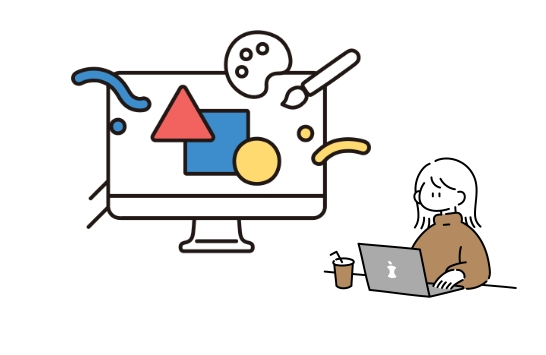
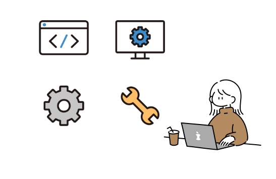

Profile ー 私について ー

OSHIRO NAHO
大城 成穂
1997年生まれ。沖縄県出身。
四大卒業後、市役所の観光部署に所属し、行政職として４年間働いていました。
広報誌の制作やSNS運営を主に担当しており、自分自身でデザインしたものがお客様より喜びの声をいただけたことに感激し、さらに技術を高めていきたいとうよりいっそう興味を持ちました。
その後、働きながらrimomoデザインスクールに半年間通いWEB制作の知識を習得しました。「お客様目線を大切に」をモットーに、ユーザー様の心を動かせるようなWebデザイナーを目指しています。
Skills ー できること ー
-

Web design
見た目と機能性を兼ね備え、ユーザー目線を忘れず使いやすいWebデザインをご提案します。
Photoshop / Illustrator / XD
-

Cording
HTMLやCSSを用いてデザインし、JavaScriptで動きの表現をつけることができます。誰でも使いやすい規則性のあるコーディングを行います。
VisualStudioCode
Career ー 経歴 ー
-
1997年
沖縄県宜野湾市に生まれる
中学生の頃に、ホームページのデザイン作成に興味を持ちます。音楽が好きで、吹奏楽部に12年間所属しており、 忍耐力と継続力があります。
-
2017年
琉球大学 総合社会システム学科 経済学専攻に進学
大学では国際経済学を専門に学び、異文化への理解を深めていました。大学生活ではカフェのアルバイト先で 販売促進ボードのデザインを担当させていただきました。
-
2021年
沖縄県宜野湾市役所に勤務
観光部署にて約４年勤務しています。インスタグラムを通した企画・発信や広報誌の制作に関わる中でデザイン業務に 興味を持ち、Webデザイナーを目指します。
-
2024年
デザインスクール リモモにてWebデザインとコーディングを学ぶ
デザインスクールでWebデザイナーに転職するためのデザインスキルとコーディングスキルを身につけています。
Strength ー 強み ー
私の強みは、相手の求めていることに寄り添う傾聴力と提案力です。 前職にて、新採用１ヶ月目の頃に、上司が「市の観光を広報誌等で取り上げたいが予算面で厳しい」と困っていたところ、 SNSを通して市の観光をPRすることを提案しました。初めての試みでノウハウもない中でしたが、市の規則や運用方法を勉強し、 インスタグラムを開設し沖縄県の自治体では一番多いフォロワー6,000人以上のアカウントとなりました。 このように、相手の意向を理解し、新しい提案ができるように業務を遂行します。
私の強みは、複数の業務を同時に進める「マルチタスク能力」です。 前職では、ルーティンの業務から準備期間が長いイベント、補助金の業務を担当していました。複数ある業務を効率よく進めるため スケジュール表にまとめ可視化し、部署間での共有を行なっていました。それにより企業様への案件依頼も、納期に余裕を持って委託 することができ、その後の業務も円滑に遂行できました。また、WEBデザイナーになるための学習を、働きながら両立しているので複数のことを同時に計画的に進めるのが得意です。
私の強みは、複数の関係者と円滑に調整を行う「調整力」です。 前職では地方公務員として観光関連業務に携わっており、来場者10万人規模の業務を担当していました。イベントを開催する ために、約４ヶ月間の長期間、100人以上の部署の方や各企業・団体様と連携を行う中で、予想外のことも数多く起きましたが、 トラブルが起きた時こそ助け合うことで課題を解決してきました。日頃から相手との信頼関係を築けるよう相手の考えの本質を 理解し、求めることに答えられるよう心がけています。
Hobby ー 趣味 ー
カフェ巡り:）息抜きをしたい時にはカフェに行って、そのお店のコンセプトを料理や食器、内装から楽しむのが好きです。
音楽:）12年間吹奏楽部に所属して打楽器を担当していました。楽器を演奏するのも、いろんなジャンルのアーティストのライブに行くのも好きです。
旅行:）国内外問わず旅行が好きです。海外は、台湾・香港・タイの3カ国に行ったことがあります。今度は、ヨーロッパにも挑戦したいです。いろんな土地の文化に触れると刺激があって勉強になっています。
動画編集:）旅行に行って思い出を写真や動画に残すことが好きで、旅行の思い出ムービーを作っています。独学でPremiere Proのスキルを高めていて、将来的には動画編集の技術を高めてお仕事に繋げたいです。